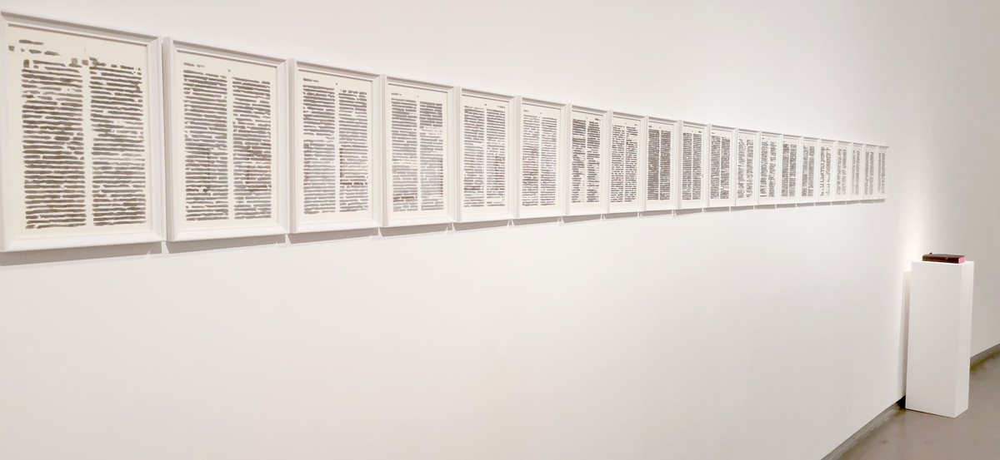

一首小诗

无酸纸输出、木框、纸质圣经、木质展台 木框为29.7x21cmx20 纸质圣经为29.7x21cm 展台高度为120x35x35cm 2016
将一本圣经中所有的文字用黑色水笔全部涂抹掉，只剩下20个字。这些遗落在书中的字连成一首小诗：“无论我活着，还是我死去，我都是一只，快乐的牛虻。”
玩玩的作品总是经由超越现实而与现实联系在一起的，而且也总是通过揭示生活中的缺憾而完成对于生活的关怀。在他最新的作品：《一首小诗》里，他将一整本圣经用墨水涂掉，只留下二十个字，这二十个字隔着许多页串成了小说《牛虻》里的一首诗:’“不管我活着，还是我死去，我都是一只，快乐的牛虻”。小说中的主角，写下这首小诗的亚瑟，是被自己的生父也是天天捧着圣经的大主教蒙坦里尼判处了死刑。
玩玩其实有好几件作品涉及到他对于革命的想象，从中可以感觉出他对于自己所身处的文化环境的思索与反省。这“一首小诗”中描述的牛虻，或许就是他对于自己的期许。
——隋建国
展览中的石玩玩的作品《一首小诗》是“将一本圣经中所有文字用黑色水笔全部涂抹掉，只剩下20个字。这些遗落在书中的字连成一篇小诗：‘无论我活着，还是我死去，我都是一只，快乐的牛虻。’” 这首“小诗”出自爱尔兰女作家艾捷尔•丽莲•伏尼契创作的长篇小说。该书讲述了意大利革命党人亚瑟•博尔顿（牛虻）通过积极的投入革命并为之献出了生命的一生的故事。其中的一个情节是主人公得知自己信仰的神父竟然是自己的亲生父亲，由此放弃了对基督教的信仰。作品实际上是从两个维度对《圣经》的意义进行了消解，首先是对《圣经》的涂抹，其二是通过另外一本书的介入导致了《圣经》意义的坍塌。
——辛子 《看的是“书”，也不是“书”——“有框的都是书，没框的不是书”展分析》